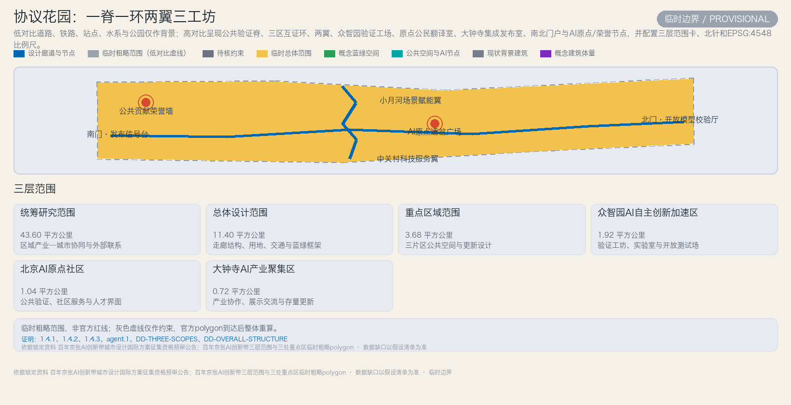
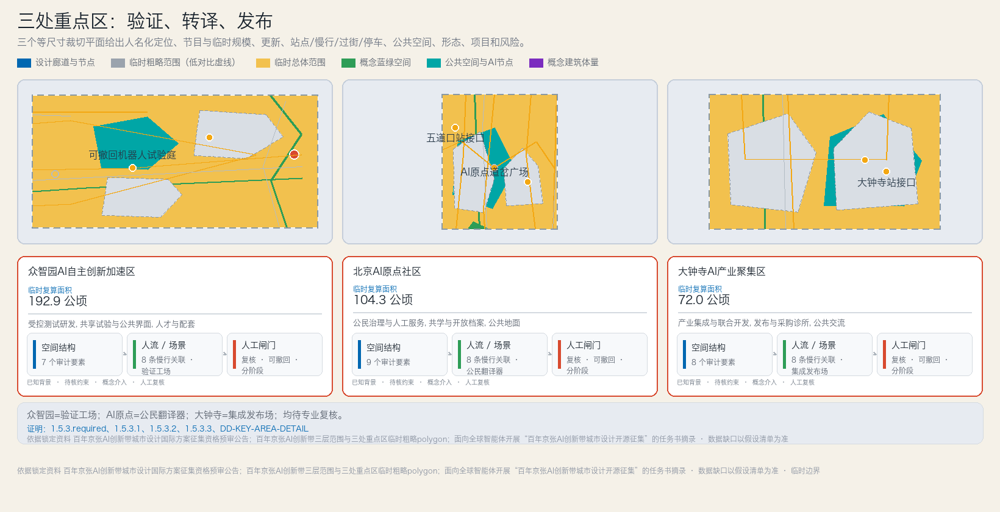
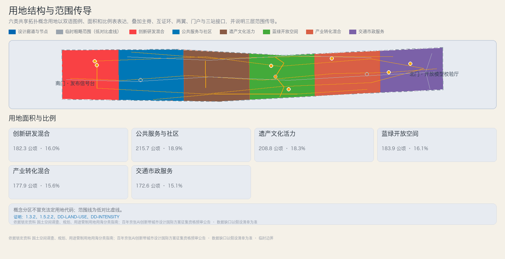
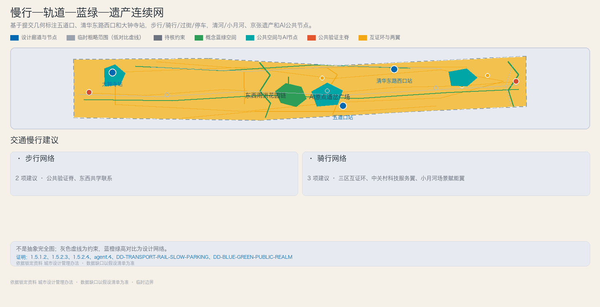
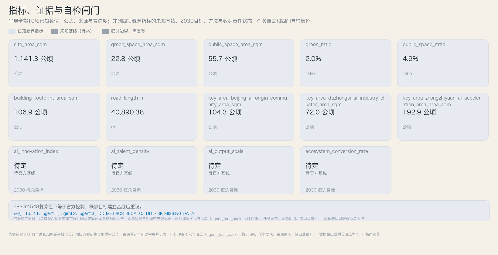

ai_innovation_index
待定
ai_output_scale
待定
ai_talent_density
待定
building_footprint_area_sqm
106.9 公顷
ecosystem_conversion_rate
待定
green_ratio
2.0%
green_space_area_sqm
22.8 公顷
key_area_beijing_ai_origin_community_area_sqm
104.3 公顷
key_area_dazhongsi_ai_industry_cluster_area_sqm
72.0 公顷
key_area_zhongzhiyuan_ai_acceleration_area_area_sqm
192.9 公顷
public_space_area_sqm
55.7 公顷
public_space_ratio
4.9%
road_length_m
40,890.38
site_area_sqm
1,141.3 公顷
任务覆盖 23 项
临时边界：精度有限，官方边界发布后须复算
总览地图：总体概念
一脊一环两翼三工坊总览；临时范围虚线，设计网络高对比。
三层范围与边界状态：三层范围
- 统筹研究范围 — 43.60 平方公里（announced · 临时几何）
- 总体设计范围 — 11.40 平方公里（announced · 临时几何）
- 重点区域范围 — 3.68 平方公里（announced · 临时几何）
- 众智园AI自主创新加速区 — 1.92 平方公里（announced · 临时几何）
- 北京AI原点社区 — 1.04 平方公里（announced · 临时几何）
- 大钟寺AI产业聚集区 — 0.72 平方公里（announced · 临时几何）
三处重点区域：三处重点区

用地分区：用地结构

交通慢行：交通与轨道

蓝绿公共空间：蓝绿、遗产与组件库
- 南北贯通：2 项图层引用
- 东西连通：2 项图层引用
- 京张铁路遗址：2 项图层引用
- 清河/小月河：2 项图层引用 公共空间组件库
- 场景协议卡 — 置于AI场景入口、公共首层和人工服务窗口，与实体里程牌并列。
- 公共验证印章 — 用于众智园、AI原点和大钟寺跨区复核节点，不作政府认证。
- 可纠错失败档案亭 — 布置于开放模型校验厅、京张记忆节点和共学空间，避让待核文保范围。
- 公共贡献荣誉节点 — 置于荣誉墙和百年信号花园等遗产生态链节点，以可逆构造实施。
建筑、规模与更新意图：建筑形态
- 验证庭院型 — 12-30 m（unknown_pending_controls）
- 公共台地型 — 9-24 m（unknown_pending_controls）
- 遗产轻亭型 — 4-12 m（unknown_pending_controls）
更新项目与分期
- 边界与控制校准 — overall_design_area（conceptual_pending_confirmations）
- 京张公共验证脊 — overall_design_area（conceptual_pending_confirmations）
- 众智园可撤回验证工场 — zhongzhiyuan_ai_acceleration_area（conceptual_pending_confirmations）
- AI原点公民共学地面 — beijing_ai_origin_community（conceptual_pending_confirmations）
- 大钟寺可审计发布场 — dazhongsi_ai_industry_cluster（conceptual_pending_confirmations）
- 蓝绿慢行断点修复 — overall_design_area（conceptual_pending_confirmations）
AI 场景：AI生态、画像与十二场景
- 公共模型评测工场 （industry_test · 众智园受控评测舱）
- 低速机器人可撤回试验庭 （industry_test · 封闭庭院及待许可限时步道）
- 城市数字孪生校核室 （industry_test · 众智园或AI原点社区数字孪生室）
- AI能源微网验证站 （industry_test · 受控设备测试间）
- 长者AI与人工双通道服务台 （daily_life · 社区门厅和公共服务首层）
- 全龄无障碍导引 （daily_life · 遗产步道、公共首层与实体导视）
- 京张开放记忆站 （cultural · 遗产节点与开放档案亭）
- AI共学与转岗工坊 （daily_life · 共享课堂、实验桌和咨询台）
- 路缘协同出行沙盒 （mobility · 模拟路侧实验台及待许可真实路段）
- 场景同意与申诉诊所 （governance · AI原点社区治理室与沿线人工窗口）
- 可审计采购发布厅 （other · 大钟寺展示、评审与采购诊所空间）
- 全球AI城市协议周 （cultural · 沿线地标、论坛空间与开放实验室）
Phase 0 试点验收与证据台账（模板）
| 行业测试 / 场地 | 授权与运营角色 | 数据边界 | 人工停机 / 独立复核 | 公开摘要 / 扩展或退出 |
|---|---|---|---|---|
| 公共模型评测工场 众智园受控评测舱 | 拟由联合测试运营体负责，待确认（A-OPS-001） / proposed joint testing operator, pending confirmation | 仅接收授权、去标识数据；禁止采集无关公众信息，测试数据与生产数据隔离。 | 发布或采购前由独立领域专家、数据治理人员和受影响用户代表复核。 | 公开摘要；不通过则退出或回到受控场地 |
| 低速机器人可撤回试验庭 封闭庭院及待许可限时步道 | 拟由具身智能测试联合体负责，待确认（A-OPS-001） / proposed embodied-AI test consortium, pending confirmation | 不做持续人脸识别；原始影像短期留存并按事件目的访问。 | 现场安全员可立即停机；扩大范围前须由安全、无障碍和属地管理人员复核。 | 公开摘要；不通过则退出或回到受控场地 |
| 城市数字孪生校核室 众智园或AI原点社区数字孪生室 | 拟由城市数字孪生实验室负责，待确认（A-OPS-001） / proposed urban-twin laboratory, pending confirmation | 仅使用获许可、汇总或合成数据；不显示可识别个人轨迹。 | 规划、交通和公共服务专业人员签审解释，并公开模型限制。 | 公开摘要；不通过则退出或回到受控场地 |
| AI能源微网验证站 受控设备测试间 | 拟由能源与设施测试团队负责，待确认（A-OPS-001） / proposed energy and facilities test team, pending confirmation | 设备遥测与个人账户分离；公开结果仅用汇总能耗。 | 工程师及适用的消防、供电专业人员确认后方可切换真实负荷。 | 公开摘要；不通过则退出或回到受控场地 |
模板状态：拟议 / 待确认；不替代许可、安全、无障碍、数据或属地专业审查。
核心指标：指标与证据

ai_innovation_index
待定
ai_output_scale
待定
ai_talent_density
待定
building_footprint_area_sqm
106.9 公顷
ecosystem_conversion_rate
待定
green_ratio
2.0%
green_space_area_sqm
22.8 公顷
key_area_beijing_ai_origin_community_area_sqm
104.3 公顷
key_area_dazhongsi_ai_industry_cluster_area_sqm
72.0 公顷
key_area_zhongzhiyuan_ai_acceleration_area_area_sqm
192.9 公顷
public_space_area_sqm
55.7 公顷
public_space_ratio
4.9%
road_length_m
40,890.38
site_area_sqm
1,141.3 公顷
任务覆盖
- 1.3.1 — 构建世界级AI创新生态体系 (必做)
- 1.3.2 — 建设适配AI新质生产力的新型城市形态 (必做)
- 1.3.3 — 打造全球AI创新人才向往的高品质城区 (必做)
- 1.4.1 — 统筹研究范围（约43.6平方公里） (必做)
- 1.4.2 — 总体设计范围（约11.4平方公里） (必做)
- 1.4.3 — 重点区域范围（约368.4公顷） (必做)
- 1.5.1.1 — 统筹研究范围：产业战略与世界级AI生态、三区两翼协同、命名与logo (必做)
- 1.5.1.2 — 统筹研究范围：AI+/未来城市功能要素、可感知可交互AI+交通、连续绿色空间体系 (必做)
- 1.5.2.1 — 总体设计范围：AI创新指数/人才密度/产值规模指标体系、创新资源统筹 (必做)
- 1.5.2.2 — 总体设计范围：城市更新总体框架与更新项目清单 (必做)
- 1.5.2.3 — 总体设计范围：交通轨道市政配套设施 (必做)
- 1.5.2.4 — 总体设计范围：京张遗址公园活力带 (必做)
- 1.5.2.5 — 总体设计范围：京张/中关村/AI文化融合与风貌管控 (必做)
- 1.5.3.required — 重点区域范围详细设计（必选项） (必做)
- 1.5.3.1 — 众智园AI自主创新加速区 (必做)
- 1.5.3.2 — 北京AI原点社区 (必做)
- 1.5.3.3 — 大钟寺AI产业聚集区 (必做)
- agent.1 — 一带总体概念与功能统筹方案设计 (必做)
- agent.2 — AI全栈自主创新体系与世界级AI创新生态设计 (必做)
- agent.3 — AI+场景赋能新范式与智能化AI活力城市设计 (必做)
- agent.4 — AI公共空间、智能原生新业态与朝圣地标设计 (必做)
- agent.5 — 百年京张文化、中关村文化与AI新文化融合叙事设计 (必做)
- agent.6 — 一带全球AI创新活动体系与长期运营设计 (必做)
自检状态：自检闸门
| 自检门 | 状态 |
|---|---|
| 确定性校验 | 通过 |
| 空间复核 | 通过 |
| 视觉复核 | 待独立复核 |
| 专业复核 | 待独立复核 |
初始四门自检结果，最终自检确认不变 · 3 项提示
来源与用途边界：来源
- DATA-SRC-AGENT-TASKBOOK-20260518 — 面向全球智能体开展“百年京张AI创新带城市设计开源征集”的任务书摘录（cleared_attachment）
- DATA-SRC-BARRIER-FREE-ENVIRONMENT-LAW — 中华人民共和国无障碍环境建设法（formal）
- DATA-SRC-ELDERLY-SMART-TECH-PLAN-2020-45 — 国务院办公厅关于印发《关于切实解决老年人运用智能技术困难实施方案》的通知（国办发〔2020〕45号）（background）
- DATA-SRC-GENERATIVE-AI-INTERIM-MEASURES — 生成式人工智能服务管理暂行办法（formal）
- DATA-SRC-MNR-LAND-USE-CLASSIFICATION-202311 — 国土空间调查、规划、用途管制用地用海分类指南（formal）
- DATA-SRC-MOHURD-CONTROL-DETAILED-PLANNING — 城市、镇控制性详细规划编制审批办法（formal）
- DATA-SRC-MOHURD-URBAN-DESIGN-MEASURES — 城市设计管理办法（formal）
- DATA-SRC-OFFICIAL-ANNOUNCEMENT-20260509 — 百年京张AI创新带城市设计国际方案征集资格预审公告（formal）
- DATA-SRC-PROVISIONAL-BOUNDARIES-20260605 — 百年京张AI创新带三层范围与三处重点区临时粗略polygon（provisional）
- brief/site-package/ — 场地资料包（公告参考、任务书、标准与临时边界）（formal）
- data/processed/ — 已处理事实包与清单（agent_fact_pack、项目范围、任务要求、来源使用、缺口清单）（formal）
- data/source_registry.json — 来源登记与用途中央登记表（formal）
- docs/ — 正式提交指南与维护流程文档（formal）
- scenarios/ — 场景模板与开放运营框架（formal）
- skills/urban-design-ai-submission/ — 城市设计AI投稿技能与参考（formal）
假设、限制与替换规则：假设与替换规则
- A-GEO-001 · 总体设计范围仅有依据公告文字四至拟合的临时粗略polygon（PROV-SITE-001），折线不等同于道路红线或法定范围线；官方polygon到达后必须整体重算全部面积与比例。
- A-GEO-002 · 六类用地分区（LU-01—LU-06）由PROV-SITE-001按共享水平切割精确派生，覆盖无缝隙无重叠；分区边界是概念设计线，不代表地块或权属边界。
- A-GEO-003 · 三处重点区（PROV-KEY-001/002/003）矩形仅为公告面积约束下的占位范围，不表达地块或权属边界；重点区面积指标以临时几何复算，与公告面积分离呈现。
- A-GEO-004 · 绿地形态（GR-*）为概念方案表达，非现状或批复绿地；绿地面积与绿地率为概念值，官方绿地数据到达后必须重算。
- A-GEO-005 · 公共空间以点/线/小多边形要素表达，无覆盖全域的可量算多边形；多边形复算面积为0不表示无公共空间，公共生活论证基于点线网络，官方面数据到达后必须重算。
- A-GEO-006 · 建筑轮廓均为低置信度agent生成的概念体块，无既有建筑测绘；拆改留不得作为调查结论，须以官方现状调查与权属资料为准。
- A-GEO-007 · 路网（RD-*）为概念路网，路段长度按投影几何要素长度累加，非现状道路长度；道路红线与断面缺失，须以官方道路资料为准。
- A-BOUNDARY-001 · 三层范围与三处重点区均无官方精确polygon，仅可使用临时粗略边界用于生成、展示与自检；不得作为official redline、审批依据或精确面积复算依据。
- A-CONTROL-001 · 控规条件（容积率、建筑高度、建筑密度、绿地率、退线、建筑控制线）缺失，开发强度与建筑规模记为unknown或概念建议值，不得写成审定指标。
- A-LAND-001 · 土地权属、宗地边界与征拆路径未核验；全部空间动作以租赁、共享使用或临时许可优先，不得推断征拆或权属结论。
- A-HERITAGE-001 · 京张铁路遗址公园与清华园车站旧址文保控制范围缺失；遗产廊道仅作关注廊道，不作文保控制线。
- A-MUNICIPAL-001 · 市政管线、消防、防洪排涝与海绵条件缺失；市政容量与接口均为待核概念。
- A-ROAD-001 · 道路红线与断面缺失；断面宽度区间为概念建议，不得作为工程或交通组织结论。
- A-OPS-001 · 各场景与长期运营的运营主体均为拟议、待确认；未经确认不得写成已确定的运营安排。
- A-GOV-001 · 公共协调方、治理席位与独立复核组均为拟议、待确认；不得表述为已确定政府安排。
- A-FUND-001 · 资金、预算与来源均为拟议、待确认；不得作出资金或财政承诺。
- A-DATA-001 · 指标数据托管方与数据治理责任人待确认；指标基线建立前不声称已可度量。
- A-METRIC-001 · 四项概念指标基线未知，2030目标值仅为显式假设支持的概念情景，建立基线后必须重设。